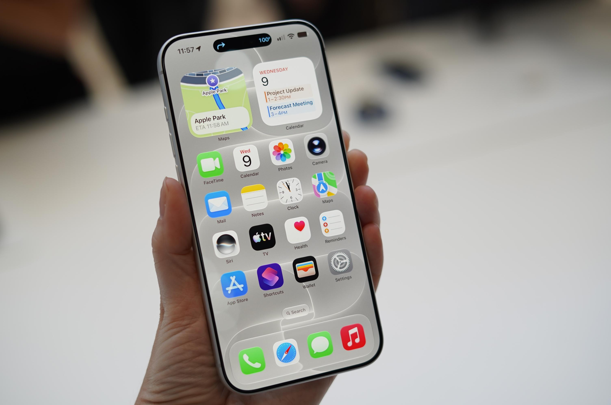

Вакансия старшего руководителя инженерной команды «Agentic AI, Proactive» в подключении Apple Intelligence, на которую первым обратил внимание Bloomberg, описывает систему, а не research-обещание. По тексту объявления агент должен «планировать и выполнять многошаговые задачи в приложениях, браузере, командной строке, коде и API» и «координировать по ходу специализированных под-агентов». Команда будет работать бок о бок с разработчиками Siri, UI Frameworks и Apple Foundation Models.
Рынок агентов, управляющих компьютером, за последние недели разогнался: через приложения Mac работают Muse, ChatGPT и Perplexity, а Google на днях разрешила Gemini управлять macOS-компьютером — со сценариями между приложениями вроде сборки презентации и заполнения форм. Вакансия Apple появляется ровно в этой точке: компания уже выкатывает обновлённую Siri с умением объяснять содержимое экрана и выполнять действия в приложениях, а в iOS 27.3 разработчикам обещан доступ к Siri «во всех приложениях». Bloomberg добавил в описание возможные функции: поворот и кадрирование фото в «Фото» или разбор вкладок Safari.
Агент, которому разрешены браузер, терминал и вызовы API, — самая лакомая цель для prompt-injection: достаточно вредоносного текста на веб-странице, чтобы «полезный» помощник стал исполнителем чужой воли. Свежая волна инцидентов (от кражи пакетов в паблик-реестрах до компрометации клиентских данных у крупных консультантов) показывает: агентские рантаймы уже атакуют в проде. У Apple исторически козырь — закрытая платформа и песочницы приложений, и, судя по описанию роли, упор на контроль и «proactive» поведение будет внутри системы, а не поверх неё. Как именно Apple собирается ограничивать агента, вакансия, естественно, не раскрывает.
Отдельного официального анонса продукта нет — первоисточником служит сама вакансия Apple, остальное пока материалы СМИ.